利用標準化的指令定義電腦的行動
但是比電腦更早被發明出來
自動織布機、自動演奏鋼琴
<1940：打孔機
194X：組合語言
195X-196X：高階語言發明
197X：基礎範式確立
198X：功能強化
>1990：百家爭鳴
Analytical Engine (2290032530)" 由 Marcin Wichary from San Francisco, U.S.A. - Analytical Engine Mill。 使用來自 維基共享資源 的 知識共享 署名 2.0 條款授權。
蒸氣驅動，打孔紙帶輸入
四則運算、比較、求平方根
1871年被發明
使用的語言類似於今天的程式語言
當時只是數字的填空遊戲
這張圖是MIPS的格式(雖然是1981才發明)
http://stackoverflow.com/questions/23123106/mips-i-instruction-immediate-field
沒錯就是那個天才
他的學生花時間弄組譯器(assembler)被他發現
It is a waste of a valuable scientific computing instrument to use it to do clerical work
拿珍貴的計算工具做文書工作真是暴殄天物
底下是x86格式的機械語言和組合語言
8d 74 26 00 lea 0x0(%esi,%eiz,1),%esi
8b 54 24 28 mov 0x28(%esp),%edx
89 44 24 04 mov %eax,0x4(%esp)
8b 44 24 20 mov 0x20(%esp),%eax
89 54 24 08 mov %edx,0x8(%esp)
89 04 24 mov %eax,(%esp)
e8 38 06 00 00 call 6b902250 <___mingw_TLScallback>
b8 01 00 00 00 mov $0x1,%eax
83 c4 1c add $0x1c,%esp
c2 0c 00 ret $0xc
假如機械語言友善方便誰還要當丐幫
全部都是數字太恐怖了!!
不能逃不能逃
於是高階語言就出來拯救世界
1957-Fortran(FORmula TRANslator)
1958-LISP(LISt Processor)
1960-COBOL(COmmon Business Oriented Language)
到現在還是很有用處
第一個正式採用且現在還活著的高階語言
用在數學及科學的計算
計算矩陣和複數很方便
整合在GCC中
第二個被發明的高階語言
函數性程式語言
其帶來的概念被其他語言所吸收
以下為比較是否同號的程式碼
(defun same-sign (x y)
(or (and (zerop x) (zerop y))
(and (< x 0) (< y 0))
(and (> x 0) (> y 0))))
將電腦運算視為數學上的函式計算
避免程式的內部狀態
避免可以被改變的物件
可以將函式當引數傳入
唉呦~副作用有很嚴重嗎?
#include <stdio.h>
int main(){
int num = 100;
int *p[3] = { &num, &num, &num };
*p[0] = 200;
printf( "%d %d %d", *p[0], *p[1], *p[2]);
}
恭喜你得到3個200!!
這個等等會再講到
#include<stdio.h>
int add(int a,int b){ return a+b; }
int call(int a, int b, int (*func)(int a,int b)){
return (*func)(a,b);
}
int main(){
printf("%d",call(100,200,add));
}
當然有其他更強大的功能
程式語言慢慢發展出了更多概念
C
Pascal
Prolog
Smalltalk
CPL
BCPL
B
C
GET "LIBHDR"
LET START() = VALOF $(
FOR I = 1 TO 5 DO
WRITEF("%N! = %I4*N", I, FACT(I))
RESULTIS 0
$)
AND FACT(N) = N = 0 -> 1, N * FACT(N - 1)
/* The following function will print a non-negative number, n, to
the base b, where 2<=b<=10. This routine uses the fact that
in the ASCII character set, the digits 0 to 9 have sequential
code values. */
printn(n, b) {
extrn putchar;
auto a;
if (a = n / b) /* assignment, not test for equality */
printn(a, b); /* recursive */
putchar(n % b + '0');
}
由B語言改進而來
廣泛使用在與硬體相關的環境下
結構化程式設計
循序結構-直直跑下去
選擇結構-if,switch
重複結構-for,while
程式可以以流程圖表示
#include<stdio.h>
int main(){
int i=0;
outer:
int j=0;
inner:
printf("*");
j++;
if(j<5){goto inner;}
printf("\n");
i++;
if(i<5){goto outer;}
}
其實只是印5*5的星星
#include<stdio.h>
int main(){
for(int i=0;i<5;i++){
for(int j=0;j<5;j++){
printf("*");
}
printf("\n");
}
}
因為有指標以前用來上資料結構
linss："C難看死了，Pascal多優美啊"
時代的眼淚
運用在自然語言與人工智慧
邏輯程式設計
定義答案所需要的規則由電腦執行之
power(N,0,1):- !.
power(N,K,R):- K1 is K-1,power(N,K1,R1),R is R1*N.
所有的東西都是物件(連條件和重複語句也是)
物件導向程式設計
| rectangles aPoint collisions |
rectangles := OrderedCollection
with: (Rectangle left: 0 right: 10 top: 100 bottom: 200)
with: (Rectangle left: 10 right: 10 top: 110 bottom: 210).
aPoint := Point x: 20 y: 20.
collisions := rectangles select: [:aRect | aRect containsPoint: aPoint].
將程式和資料封裝在類別的實體中
繼承
封裝
多型
獲得原先的屬性和行為
class Bomb
def explode
print "你已經死了"
end
end
class MadeInChina < Bomb;end
MadeInChina.new.explode #=> 你已經死了
隱藏程式內部的具體執行步驟
class Killer
private
def drink_coffee;end
def read_news_paper;end
def time_to_die
print "你已經死了"
end
public
def assassinate
drink_coffee
read_news_paper
time_to_die
end
end
不同類別對於同樣呼叫有不同的行為
class Wine
def drunk
print "讚啦~~"
end
end
class FakeWine
def drunk
print "你已經死了"
end
end
接下來的時代是上個時代的持續成長
將之前的構想發揚光大
Ada
C++
Perl
統合美軍系統的語言之用
命名由來為愛達·勒芙蕾絲，她是第一位電腦程式設計師
雖然很嚴謹但是還是有火箭炸了...
整合在GCC中
本來稱為C with classes
除了物件導向還有模版系統
現在連lambda特性都加入了
C++11,C++14...
template <int N>
struct Factorial {
enum { value = N * Factorial<N - 1>::value };
};
template <>
struct Factorial<0> {
enum { value = 1 };
};
void foo()
{
int x = Factorial<4>::value; // == 24
int y = Factorial<0>::value; // == 1
}
長得很像之前的功能齁
#include<stdio.h>
int call(int a,int b,int (*func)(int,int)){
return func(a,b);
}
int main(){
auto add = [](int a, int b) { return a + b; };
printf("%d",call(100,200,add));
}
反正看不太懂就是了
多用途的直譯式語言
"不只一種方法來做一件事"
因為自由度太高所以可讀性差...
說可讀性差?哪有可能啊
$_='while(read+STDIN,$_,2048){$a=29;$b=73;$c=142;$t=255;
@t=map{$_%16or$t^=$c^=( $m=(11,10,116,100,11,122,20,100)[$_/16%8])&110;
$t^=(72,@z=(64,72,$a^=12*($_%16 -2?0:$m&17)),$b^=$_%64?12:0,@z)[$_%8]}(16..271);
if((@a=unx"C*",$_)[20]&48){$h =5;$_=unxb24,join"",@b=map{xB8,unxb8,chr($_^$a[--$h+84])}@ARGV;s/…$/1$&/;
$d=unxV,xb25,$_;$e=256|(ord$b[4])<<9|ord$b[3];
$d=$d8^($f=$t&($d12^$d4^ $d^$d/8))<<17,$e=$e8^($t&($g=($q=$e14&7^$e)^$q*8^$q<<6))<<9,$_=$t[$_]^ (($h=8)+=$f+(~$g&$t))for@a [128..$#a]}print+x"C*",@a}';
s/x/pack+/g;eval
請吃雞排的時候到了
生產力也被視為語言的重要指標
網際網路時代來啦~~
.jpg#/media/File:Analytical_Engine_(2290032530).jpg){kind=link}